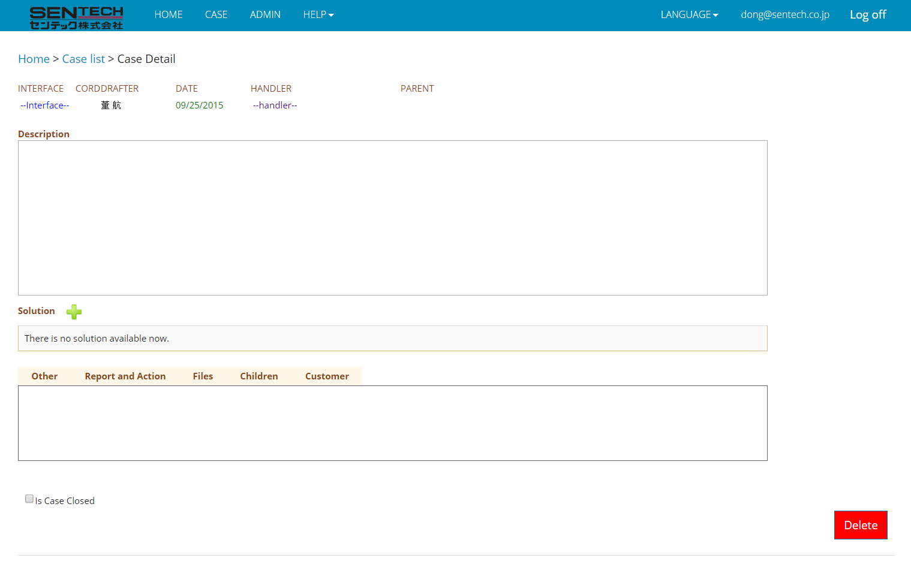

In case list page, click Add to go to adding new case page. The adding new case page:

Below the sitemap are:
-
INTERFACE: the interface of the camera that is involved in this case
-
CORD: the cord of the camera that is involved in this case, after specify the interface, this dropdown list will be enabled
-
DRAFTER: the person who report this case, cannot be changed
-
DATE: the date when this case is reported, cannot be changed too
-
HANDLER: the member who should take care of this case
-
PARENT: the parent of this case
-
DESCRIPTION: the description of this case
-
Solution: the solutions of this case, when click “PLUS” mark; user will be lead to adding a new solution page. It is recommended that to add a new solution after adding a new case finished.
-
Other: some other information about this case, or remaining things here
-
Report and Action: to whom should this case be reported. When finished, click “Confirm” to save
Files: the files which are related to this case, only name and path will be displayed
-
Children: the successor of this case, when click “Add” button, user will go to adding a new child page
-
Customer: the customer information of this case. When finished, click “Confirm” to save.
-
Is Case Closed: If the case is closed, please check this checkbox to close this case. If the current case has children, before all its children including all the successors are closed, this case cannot be closed. If this case is reopened, all this case’s directly predecessor will be reopened.
-
Delete: If a user wants to delete this case, just click this button and confirm the pop up alert. If the current case has children, this case will not be closed.
After fill in the information of each field, the information will be automatically saved into database. Expect Customer field and Report and Action field. Those two fields need user to click Confirm button.